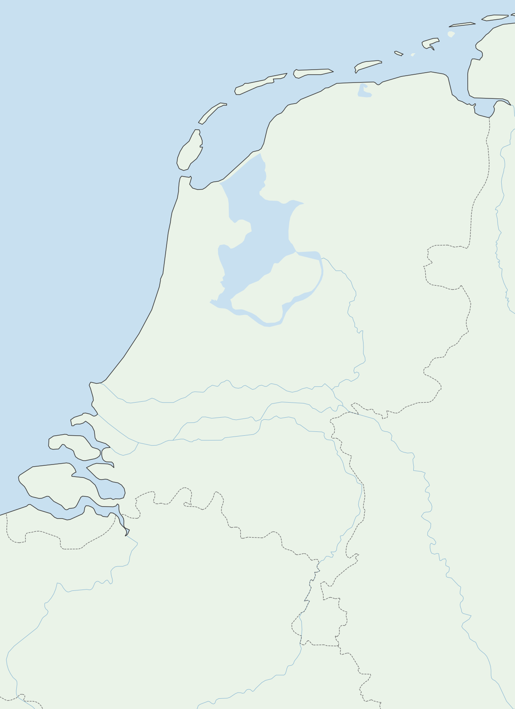

Ed Aldus WM — Synoptische kaart
KNMI 10-minuten waarnemingen ·
laden…
↻ Vernieuwen
Toon:
🌡 Temp
☁ Bewolking
💨 Wind
💧 Dauwpunt
% Vochtigheid
👁 Zicht
↕ Wolkenhoogte
klik station voor details
Waarnemingen ophalen…
Ed Aldus WM
Actuele waarnemingen KNMI
–
–

🔍 klik voor vergroting
8 oktas (bewolkt)
0 oktas (helder)
7.4
Temp °C
5.1
Dauwpunt
Wind
✕
✕
Station